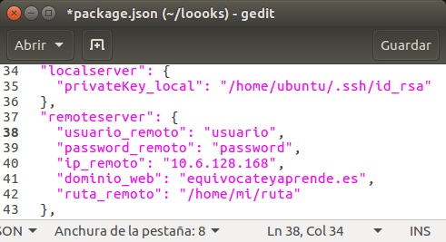

Paso 4: Crear y desplegar el libro.
Nos colocamos en nuestra máquina local con exit y ejecutamos los siguientes comandos:
exit
sudo npm install -g nuevo-libro-merquililycony
gitbook-start -d <directorio>
cd <directorio>
npm install
npm install --save gitbook-start-digitalocean-merquililycony
Entramos en el libro que hemos creado, abrimos el fichero package.json y editamos los campos de la imagen de ejemplo que se muestra a continuación con los de nuestro servidor.
- privateKey_local: Clave privada de nuestra máquina local, la encontramos dentro del directorio ~/.ssh.
- usuario_remoto: Nombre del usuario de la máquina remota.
- password_remoto: Contraseña del usuario de la máquina remota.
- ip_remoto: IP: de la máquina remota.
- dominio_web: OPCIONAL Nombre de dominio para tu libro.
- ruta_remoto: Ruta donde se desplegará tu libro en el servidor remoto.

Para completar el despliegue, ejecutamos los siguientes comandos:
gulp paquete-ocean
gulp deploy
gulp push
gulp deploy-digitalocean
Con esto ya podemos acceder a nuestro libro escribiendo la dirección IP de nuestra máquina en Digital Ocean. El servidor está corriendo en el puerto 8080 con http.
NOTA: Una vez publicado el libro, si desea realizar alguna modificación sobre el mismo, debe acceder al directorio txt, actualizar sus archivos de markdown y ejecutar los siguientes comandos:
gulp deploy
gulp push
gulp deploy-update

NOTA: El paso 5 y el paso 6 es opcional. A la finalización de los mismos tendremos un nombre de dominio apuntando a nuestra máquina remota y un certificado SSL de Let's Encrypt gratis como se muestra en el siguiente enlance: